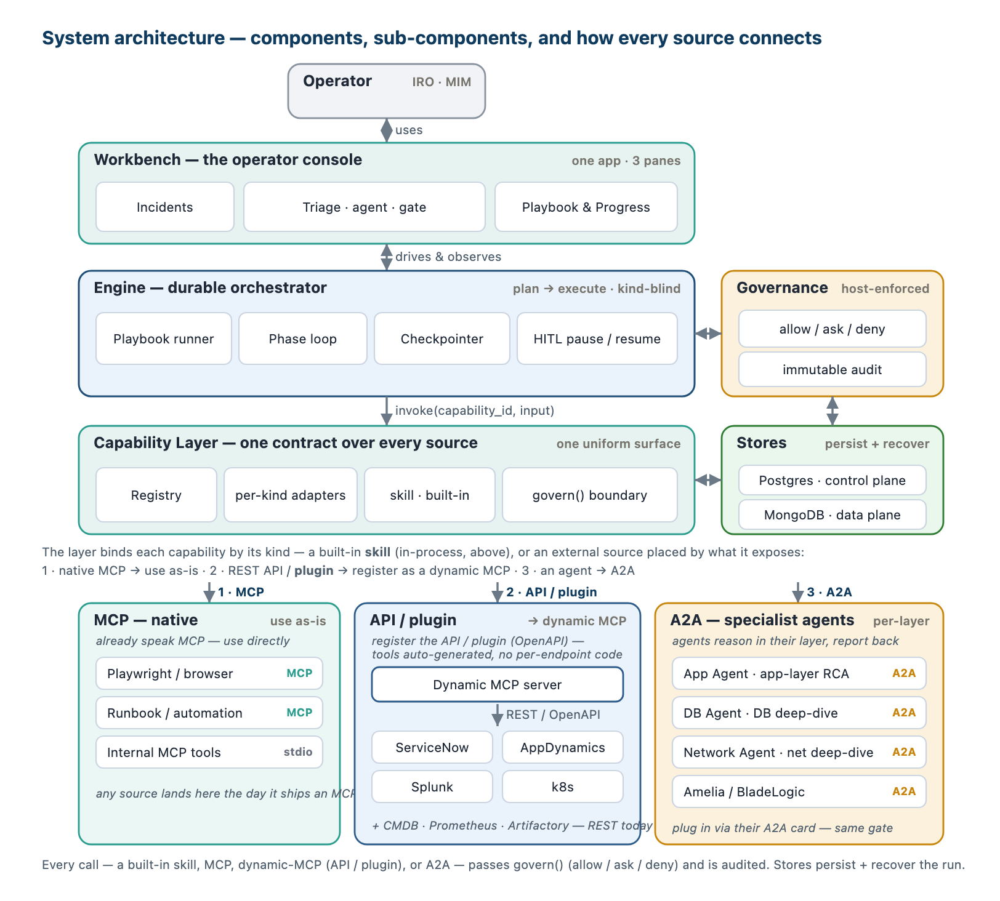

Incident Triage AIOps — System Brief
A governed, in-house engine for production incident support — one console, one capability layer, no vendor lock-in.
What it is, and how it connects
One engine drives the work and calls abstract capabilities — never tools directly, so it never changes when a source does. One governed capability layer sits over every source and binds each by its kind — a built-in skill, an MCP server, a registered API (a plugin wrapped as a dynamic MCP), or an A2A agent — in a clear onboarding priority: native MCP where a tool already speaks it; else register the API (its OpenAPI spec) as a dynamic MCP — no per-endpoint code, the way most REST tools onboard; else A2A for the deep, per-layer specialist agents — App, DB, Network root-cause, plus Amelia / BladeLogic wrapped as governed capabilities. Whichever kind, every call passes the same allow / ask / deny gate and is audited. The operator works in one console.

The engine drives a playbook — the process is a document, not code
The engine takes an incident through four re-enterable phases, gated and audited. The process lives in a versioned playbook; change how incidents are handled by editing the playbook — the engine never changes. The engine is domain-neutral: a different playbook runs a different investigation domain (provisioning, capacity…) on the same engine.
Running the playbook does three things: ① it follows the process (the phases); ② it builds an investigation graph — in stages; ③ you watch where it is, phase by phase and as a graph, in the console.
The process is a real, versioned Markdown file — front-matter the engine executes, a body the agent follows. The essentials, in brief:
---
id: incident-triage · version: 1.0.0 · domain: app-incident
defaults: { on_failure: run-remaining, retry: {max: 3, backoff: exponential} }
unknown_access: ask # default gate for unknown-effect capabilities
phases: # TOOL-AGNOSTIC — an intent (needs) + an effect, never a tool name
- { id: assess, effect: read-only, needs: [incident-source, topology, change-history, telemetry, similar-incidents], output: AssessResult }
- { id: root-cause, effect: read-only, needs: [metrics, logs, traces, topology, change-history], output: RootCauseResult, min_confidence: 0.7 }
- { id: remediation, effect: write, needs: [remediation-action, escalation], output: RemediationResult, gate_writes: true }
- { id: verify-close, effect: read-only, needs: [telemetry, synthetic-replay], output: VerifyResult }
# the engine resolves `needs` (intents) -> concrete capabilities from the live registry, bounded by `effect`
---
The complete file — every phase body and the output schemas — is on the next page.
The complete playbook — the format we build to
The whole incident process is one versioned Markdown file: front-matter the engine executes (the phases as intents, not tools; the gates and defaults; the domain type system) and a body the agent follows. This is the actual incident-triage.playbook.md — to change how incidents are handled you edit this file; the engine never changes, and a different file runs a different domain.
---
id: incident-triage
version: 1.0.0
domain: app-incident # ONE engine, many playbooks — swap this file for a new domain
status: active
owner: iro-sre
# defaults are inherited by every phase unless the phase overrides them
defaults:
on_failure: run-remaining # finish independent steps, then report
retry: { max: 3, backoff: exponential } # retry TRANSIENT errors only; permanent -> error_handler
unknown_access: ask # default gate for unknown-effect capabilities (deny|ask|allow)
error_handler: { action: escalate, to: on-call, via: pagerduty }
# phases are TOOL-AGNOSTIC: each declares an INTENT (needs) + an effect, NEVER a tool name.
# the engine resolves `needs` -> concrete capabilities from the live registry, bounded by `effect`.
phases:
- { id: assess, effect: read-only, output: AssessResult,
goal: "What's affected, how bad, what changed — surface impact + early suggestions.",
needs: [incident-source, topology, change-history, telemetry, similar-incidents] }
- { id: root-cause, effect: read-only, output: RootCauseResult, min_confidence: 0.7,
goal: "The most probable cause — ranked, with evidence and a stated basis.",
needs: [metrics, logs, traces, topology, change-history, layer-deep-dive] }
- { id: remediation, effect: write, gate_writes: true, output: RemediationResult,
goal: "The safest fix — reverse, mitigate, or escalate; stop the bleeding.",
needs: [remediation-action, escalation] }
- { id: verify-close, effect: read-only, output: VerifyResult,
goal: "Confirm recovery from the user's side; revert temporaries; a human closes.",
needs: [telemetry, synthetic-replay] }
# the domain TYPE SYSTEM travels with the playbook, so the engine + UI stay domain-neutral
graph_schema:
node_types: { system: [app, service, database, network, storage, compute, external],
incident: [incident, cluster], change: [change], alert: [alert] }
edges: [depends_on, hosted_on, runs_on, routes_to, located_in, changed, affects,
suspected_cause, related_to, member_of, observed_on]
facts: [health, latency, error_rate, impact_state]
# output contracts, versioned with the playbook (validated on author, publish, and load)
output_schemas:
AssessResult: { required: [incident_type, symptom, affected, impact_assessment, changed, suggestions] }
RootCauseResult: { required: [candidates, selected, status] }
RemediationResult: { required: [actions] }
VerifyResult: { required: [recovered, resolution] }
---
## assess
Build the picture (read-only): the affected service(s) + neighbourhood from topology, light health
on the symptom, recent changes, related / similar priors — and USE the priors (a similar incident's
fix becomes an early suggestion). `changed:[]` is a first-class "checked-and-clean" assertion.
## root-cause
Ranked candidates — never one asserted — each with a cause path (victim -> ... -> cause) and a
confidence whose BASIS is stated. Walk the graph; rule out alternatives with evidence. Pivot if the
health-walk dead-ends (data, async-lag, expiry can read green on health). Cause may be a node,
change, zone, or a time factor.
## remediation
The safest fix — every write gated. kind: reverse | mitigate (temporary ones carry revert_when) |
escalate. Each action carries expected_effect, blast_radius, and rollback. Idempotency key
(exactly-once); a permanent failure goes to the error_handler.
## verify-close
Confirm recovery from the user's side (before / after + synthetic replay). Revert every temporary
action before close. Record the resolution — what actually fixed it, which the next incident learns
from. If recovery did not hold, backtrack to root cause. A human closes; the engine never auto-closes.
The data each run produces — the model in brief
Each run builds one investigation graph — typed nodes (systems, the incident, changes, alerts), edges (depends_on, hosted_on, suspected_cause…) and facts (health, latency, impact_state) — shared across all four phases. Each phase records its journey (ordered steps; every tool-call carries an evidence deep-link) and a typed output. The subject is named domain-neutrally as {domain, id}, so the same model serves any investigation domain. It is stored in two planes: the incident document (denormalized) in MongoDB; the playbook + capability registry (normalized) in PostgreSQL; the live run state is LangGraph's checkpoint, kept separate.
| Phase | Output | Fields (every one defined, in full, in the data-model doc) |
|---|---|---|
| Assess | AssessResult | incident_type · symptom · affected[] · impact_assessment · changed[] · suspected_locus · suggestions[] |
| Root cause | RootCauseResult | candidates[] (cause · node · confidence{value, basis} · path · evidence) · selected · ruled_out[] · status |
| Remediation | RemediationResult | actions[] (kind · technique · expected_effect · blast_radius · rollback · temporary/revert_when · approval · result) · status |
| Verify & close | VerifyResult | recovered · before_after · resolution · temporary_actions_status[] · status |
The full data model — every node, edge, fact, phase record and output, each defined → explained → shown as JSON → tabled — is the companion Data-Model doc; a worked capability and the gated INC-4821 run are in the Design doc.
One workbench — watch the engine think, decide at the gates
The only UI, in the Claude-Desktop three-pane shape: Incidents on the left; in the center, Triage — the entire incident's chat, where the agent's steps, evidence, and suggestions appear and the approval gate is inline; and on the right, Phases & Steps with a Graph tab — the phases with their typed outputs, or the live investigation graph with the cause path highlighted. It evolves with the operator as autonomy is earned.

Right pane on Phases & Steps — the four phases, each step, and its typed output. The worked run: INC-4821 — a failed disk → RAID rebuild → DB I/O → checkout latency.

Same console, right pane switched to Graph — the investigation graph, the cause path app → db → storage highlighted to the suspect; the deploy is greyed as ruled-out, the similar prior is a reference. One incident node (the subject); others are references.
Phased — value early, autonomy earned, the incumbent retired gradually
Five milestones over ~14 two-week sprints. Each is gated, audited, and reversible; Amelia runs alongside and is dialled down only as in-house actions prove themselves — no big-bang cutover.
Full by-sprint plan + the timeline (Gantt) + the parallel hardening track: the Delivery Plan.